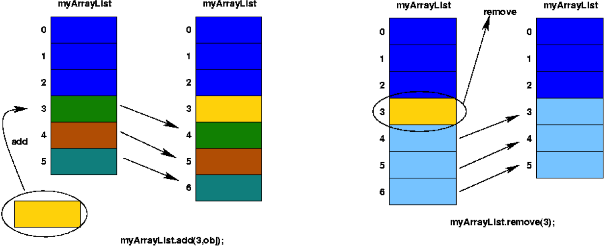

Array List Limitations
An
add
or
remove
operation on an
ArrayList
that is not at the end of the list will require elements to be shifted.
This can be slow for a large list.
What is the worst possible case?
